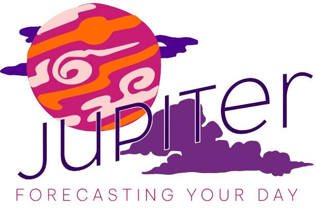
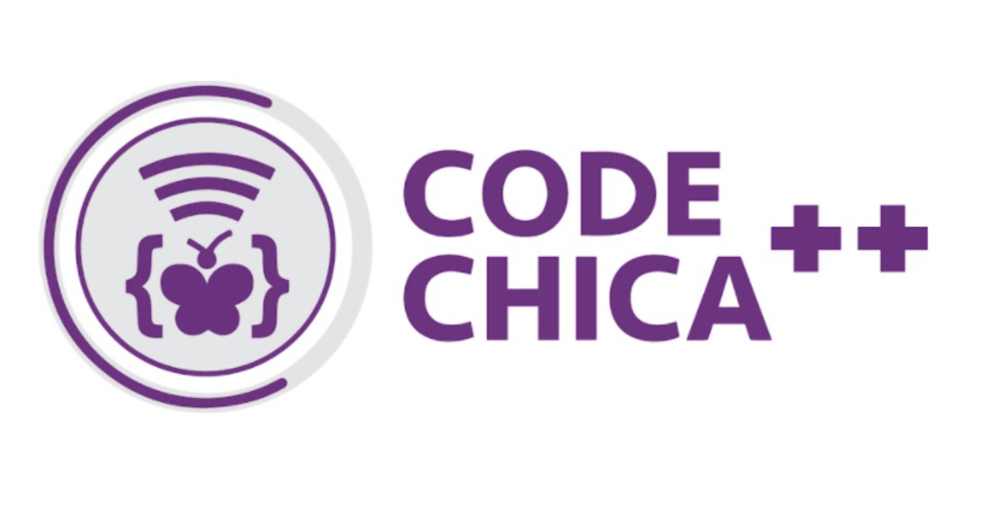

Welcome to Jupiter✨

to use this app, type a city into the search bar
this app was created as part of CodeChica++ Cohort 5's final project.
Code Chica offers a free coding program designed for girls aged 14-18
to learn HTML, CSS, and JavaScript. Participants are organized into
small cohort groups of around 10 students, meeting every Saturday for
8 weeks. Throughout the program, they collaborate with instructors and
guest speakers who bring expertise in computer science, engineering,
and related fields. Upon completing the course, participants not only
gain valuable experience but also receive a cash stipend as a
rewarding outcome.
